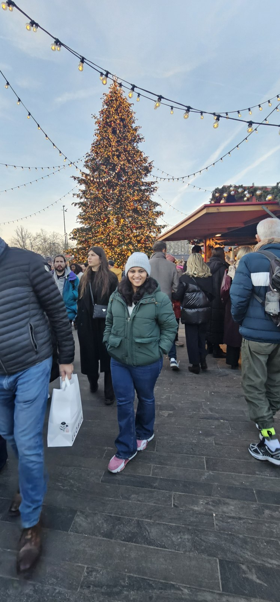
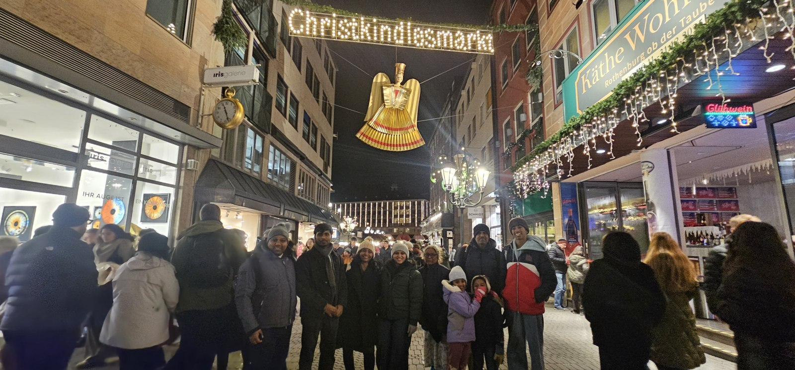
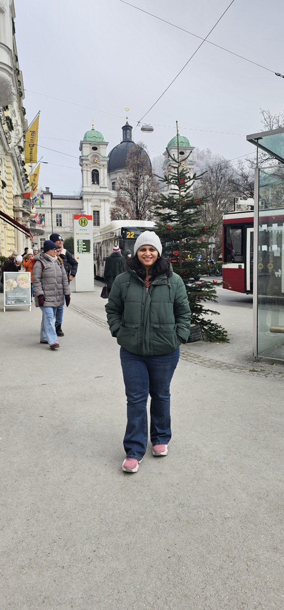

The festive highlights
Three countries, three Christmas market stops
The Christmas markets were a highlight of our family holiday. We visited markets in Zurich, Switzerland, Nuremberg, Germany, and Salzburg, Austria—three different city settings connected by one festive trip.
Explore the market stops
The photographs below are from our own December 2025 trip, with the visit dates shown in their captions.
A Christmas holiday across three countries
Our Christmas 2025 trip connected Switzerland, Germany and Austria over thirteen calendar days. We travelled as a family, beginning in Bristol on 20 December and returning on New Year’s Day. Zurich was our first stop, followed by an international train journey to Munich and a family base in Landshut.
It was a different rhythm from moving hotels every night. The first two nights were in Switzerland; the longer German part of the holiday centred on staying with family. A visit to Salzburg added Austria to the journey.
01 / Switzerland · 20–22 December 2025
An early start for Zurich
We left Bristol on easyJet flight EZY2895 on Saturday 20 December. The booked departure was 06:35, with arrival in Zurich at 09:15 local time. An early flight put the first travel day firmly in Switzerland rather than using it entirely for an evening arrival.
The trip’s dated location records place us in Zürich on 20 December and Hergiswil, Switzerland, on 21 December. Zurich remained our opening base until 22 December, when we continued to Germany from Zürich Hauptbahnhof, the city’s main railway station. It gave the holiday a clear two-part beginning: arriving by air, then leaving the city by rail.
Zurich: Christmas markets and the Singing Christmas Tree
Our Zurich stay included a Christmas market visit. The choir clip I recorded on 20 December shows singers arranged on a tree-shaped stage, matching the Singing Christmas Tree at Werdmühleplatz, just off Bahnhofstrasse.
Zurich has several distinct festive markets, including those in the Old Town and inside Zürich HB. Our own photograph below records our Christmas market visit in the city, with a decorated tree and festive stalls.

02 / Switzerland to Germany · 22 December
From Zürich HB to Munich, without changing trains
The next booked leg was Deutsche Bahn EC 193, departing Zürich HB at 13:32 on Monday 22 December and reaching Munich at 17:05. The confirmation lists a journey time of 3 hours 33 minutes with no changes.
For our family, the direct connection kept this part of the route straightforward: one train between the Swiss and German city stops. Our booking covered two adults and one child on Super Sparpreis Europa tickets; no seats were reserved.
Times here follow the train confirmation in local time. The email’s automatic summary displayed a different hour; the detailed itinerary states 13:32–17:05.
Germany · A Christmas market highlight
Nuremberg’s famous Christkindlesmarkt
Our German travels also took us to the famous Christmas market in Nuremberg (Nürnberg). The Nuremberg Christkindlesmarkt fills the Hauptmarkt in the old town and is known for its wooden stalls with red-and-white-striped roofs, traditional decorations and gingerbread.
It was one of the key festive stops alongside Zurich and Salzburg. Our photograph confirms the visit on 23 December 2025, during the German leg of our holiday.

Market setting: Hauptmarkt, Nuremberg, Germany. The photograph above is from our own visit on 23 December 2025.
03 / Germany · Christmas 2025
A family base in Landshut
After the Zurich–Munich journey, Landshut became our base for the German part of the holiday. Staying with family shaped this section of the trip, with Christmas itself part of a longer stay rather than a brief city break.
Our location records also place us in Schwangau on Christmas Eve, 24 December, and Landshut on 31 December. These add two dated stops to the German part of the holiday. The records do not by themselves establish admission to a particular castle or attraction.
Munich was the arrival point for the train and the departure point for our flight home. Landshut provided the family connection between those two journeys. We stayed in this part of Germany from 22 December until our return on 1 January.
04 / Austria · Late December 2025
Adding Salzburg to the holiday
Our trip also included Salzburg, Austria, on 29 December 2025. The date and city are supported by the trip’s location metadata. It extended the holiday beyond our Swiss arrival and German family stay, bringing a third country into the same Christmas journey.
Salzburg: Christmas stalls in the old town
We visited Salzburg’s Christmas market during our 29 December stop. The Salzburger Christkindlmarkt is centred on Domplatz and Residenzplatz beside Salzburg Cathedral. Its 2025 season continued through 1 January 2026, so this was a market visit after Christmas Day.
My Salzburg footage includes a miniature railway and model village in a festive outdoor display. It adds a small moving detail to the wider market story.

Salzburg is recorded as a visit during the holiday. The exact transport connection and any separate overnight stay are not established in the records used for this account, so the route table keeps those details open.
05 / Germany to the UK · 1 January 2026
Home on New Year’s Day
We returned from Munich Terminal 1 to Bristol on easyJet flight EZY2944 on Thursday 1 January 2026. The booked departure was 20:25, with arrival at 21:35 local time.
Flying home from Munich completed a route that began in Zurich, rather than retracing the international train journey. Across the holiday we combined two flights, a direct cross-border rail connection, a family stay and our visit to Austria.
The practical record
From where to where
| Date | Journey | Booked transport / local times |
|---|---|---|
| 20 December 2025 | Bristol → Zurich | easyJet EZY2895 · 06:35–09:15 |
| 22 December 2025 | Zürich HB → Munich | Deutsche Bahn EC 193 · 13:32–17:05 · direct |
| 21 December 2025 | Hergiswil, Switzerland | Visit supported by dated location metadata; transport not verified |
| 24 December 2025 | Schwangau, Germany | Visit supported by dated location metadata; transport not verified |
| 22 December onward | Munich / Landshut family base | Local transfer details not recorded |
| 29 December 2025 | Salzburg visit, Austria | Transport details not yet verified |
| 1 January 2026 | Munich Terminal 1 → Bristol | easyJet EZY2944 · 20:25–21:35 |
This retrospective uses our flight and train confirmations, recorded trip details and dated location metadata. The photographs are from our own trip. Timings are booked historical times, not live schedules. The Zurich hotel name and some local transport details remain unverified. The three Christmas market visits were confirmed from my trip recollections.
More journeys from the window seat
Our next travel story follows a different route through northern Europe: Copenhagen, Oslo, the Flåm Railway, Bergen, Sweden and Helsinki.
Read the Nordic journey →